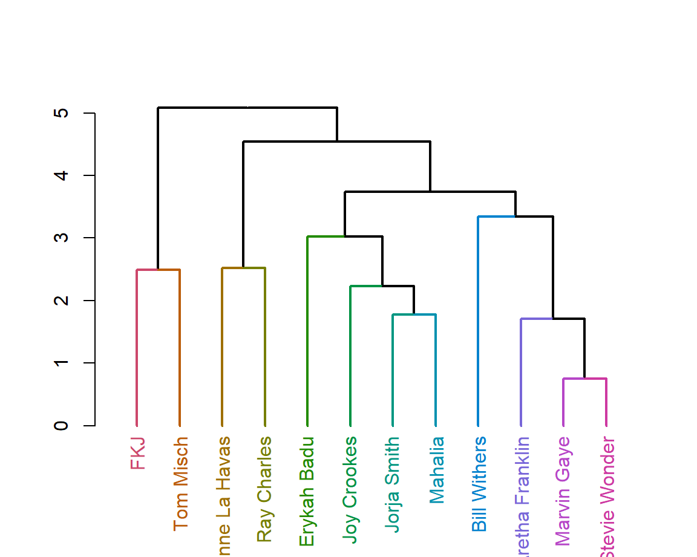
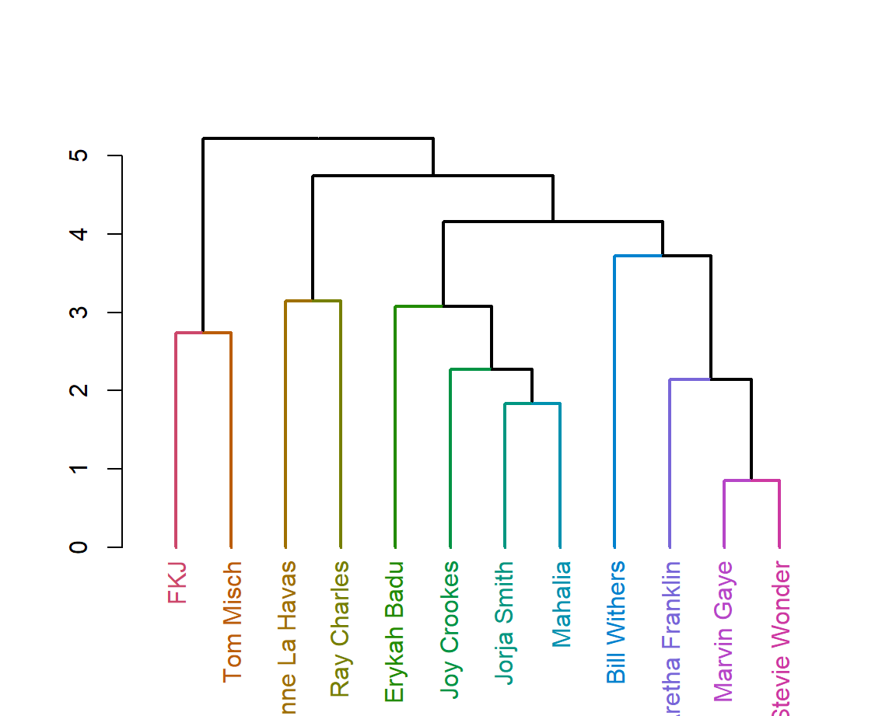
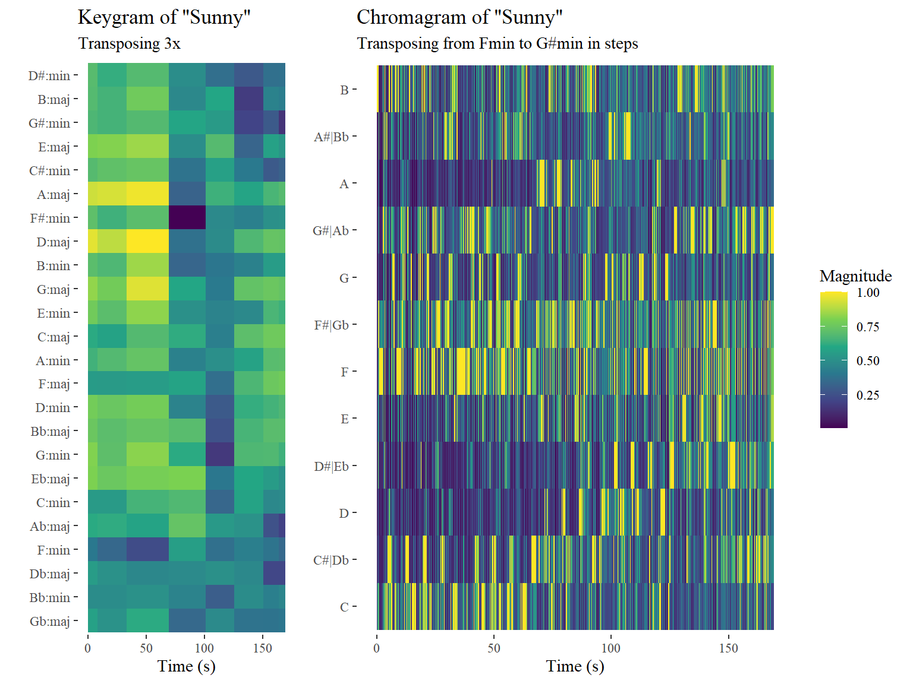

Clustering

For now I just clustered the songs of FKJ, in the future i will hopefully be able to cluster all the artists of my corpus, but it requires some heavy data prep which i need to look into more still. For now it is interesting to see that it perfectly clusters the slower piano songs, and the rest.
heatmap of clusters
Here we can see what features are selected for clustering and what their role is. the color of the feature is how it compares to other tracks in the data
Corpus
Research Question
How has the soul changed over time? WHY
Motivation
I want to research soul music. I am a musician myself and make soul/jazz/funk/RnB, I am curious how the music I listen and make everyday came to be and differce from earlier Thats why I decided to see how big soul artists through the years compare to eachother. To decide what artists I should include, I made a mix of artists that inspire me, artists that have ment a lot for the genre in the perspective of my guitar teacher (who finished his jazz conservatory master) and artists that made the top according to websites (Sources). These are the artists per generation:
Old Generation: Erykah Badu, Steve Wonder, Bill Withers, Marvin Gaye, Ray charles, Aretha Franklin.
new generation: Tom Misch, Lianne De Havas, FKJ, Joy Crookes, Jorja Smith, Mahalia.
I, and the sources mentioned earlier, think these artists really represent the genre in their time and think it is a good representation of what I want to research. I do think more many names could be added, such as Bobby Hebbs, but I dont think this would be of use.
Hypotheses
I suspect the most difference will be seen in tempo and time, as most songs have been going faster and getting shorter through the years The tracks of all these artists will be compared, I think Bill Withers is the most atypical, because he does a lot of genres besides soul alone (like blues etc.)
Overview of the new generation
In the graphs, the new generation data is visualized. Energy, valence, danceability and popularity are displayed and per track of every playlist/artist used.
Interesting observations
There was also an outlier, like Hi (see old generation overview), in the This is Mahalia playlist, Spotify has taken it out during the time I worked on the project. I Think this was a good decision, since it was a track chat, a discussion about a track she made, and not an actual song. I wanted to mention this, as it is possible for spotify to put it back in, and in case that happens, I want to be able to explain it. In This is Jorja Smith, there are also some tracks with a popularity of 0, I am not sure how this can be possible since they where listened to and it is unclear how spotify determines the popularity of a track.
Overview of the old generation
In the graphs, the old generation data is visualized. Energy, valence, danceability and popularity are displayed and per track of every playlist/artist used.
Interesting observations
What is interesting to see is that there is one outlier, a song of Erykah Badu. This one is called Hi, which is not a full song, but definitely music, it is in the This is Erykah Badu playlist. This song has no valence and tempo stats, they are set to 0. Another interesting point is that 1 song of Bill Withers,Dont want you on my mind, has a very high tempo (240-250).
Taking a look at the tempo of the tempo-outlier in the old generation

For the explanation of the tempo outlier, 2 tempograms were created. One cyclic and one normal, to see how the tempo would be analyzed. As we can see in the non-cyclic graph, we can see the brightest line around the tempo of 220-250 bpm. In the non-cyclic graph, we can see the brightest line is is around 120 bpm. This is the actual bpm. Spotify measures the tempo to high, a tempo octave to high even maybe. MEASURE IN ENERGY OR SPECTOGRAM, ENERGY = LOUDNESS MORE MUSICOLOGICAL TERMS TOEVOEGEN EN OVERAL TITLES ENZO
comparing the generations danceability, valence, tempo and energy

To see how the generations compare, some major characteristics are shown in graphs. As can be seen in the visualization, the old generation generally makes songs that are higher in tempo and valence then the new generation. This was surprising, since this means that the genre does not follow the trend of speeding up its songs. Besides that, the new generation generally makes songs that have higher danceability, but lower energy than the old generation. I think it is interesting that the tempo goes down (as can be seen in the comparison of tempo and valence), but the danceability goes up. This could imply that songs are getting groovier.
low level comparison between the generations (1)

As we can see, most timbre coefficients do not differ a lot between the generations, except 2 and 4. This could mean that the feel of the tracks do not have changed a lot. This could be explained by presenting the same genre.
low level comparison between the generations (2)

As we can see, most timbre coefficients do not differ a lot between the generations, except 2 and 4. This could mean that the feel of the tracks do not have changed a lot. This could be explained by presenting the same genre.
comparing an original with a cover from the generations with Dynamic time wraping
Another interesting point to see if (and how) the generations differ from eachother, is to look at the cover of a song of an artist from the old generation, by an artist of the new generation. In the dynamic time warping graph, Say a little prayer by Aretha Franklin is compared to the cover of Lianne de Havas. To compare the two songs, they need to be in the same key, as Dynamic time warping compares pith information. The cover was in Emin and the original in F#min, so the cover was transposed 2 semitones to F#min as well.
As we can see in the visualization there is no line that shows similarities. This is interesting because it is a cover of the same song, compared in the same key. The absence of similarities can have multiple reasons. The first is that the instrumentals are very different. In the cover, the guitar is very upfront and it played with a lot of vibrato, which could throw the pitch information off. Besides that, the cover is a live performance and is sang in a different way than the original (which is not a live performance). It is interesting to see that the songs do not compare and all, which could mean that the new generation of soul has a very different way of expressing the genre than the old generation. However this is very generalized, as we only compare one cover here.
Conclusion and Discussion
Conclusion
to be implemented
Discussion
In the portfolio, the old and new generation of soul artists exist of 6 (arbitrarily chosen) artists. While this gives some representation of how the generations compare, for further research it is adviced to use larger artist groups, with artists chosen carefully. Another point is that the comparison of the cover ALS GETRAINSPOSED NOG FIXEN!!!!!!!!!!!!!!!!!!, only consists of 1 cover. This is a very small number of comparisons, and needs to be bigger in future research.
chromogram, keyogram and chordogram of an interesting soul track

I decided to visualize the song Sunny by Marvin gaye (the original is from Bobby Hebbs). I really wanted to visualize this song, because it is a great song in itself transposes a few times. As seen in the chromogram, the song starts in Fmin transposes to F#min, Gmin and ends in G#min. We can see this in our keyogram and chordogram visualized as well. I think this song is very interesting to see in the visualization, as you can see the transposing happen.
Self-Similarity Matrices for a song of Tom Misch & FKJ
to understand how the structure of a song works, a song of the new generation is visualized. The song is made by 2 artist from the new generation, making it more representable for the genre than other songs. In the Self-Similarity matrix, the song Losing my way from Tom Misch & FKJ is analized. First we analize via a timbre SSM. Timbre can be described as the feel of a track, and what different instruments are used, but the term is hard to describe. As the timbre SS matrix shows, there are different sections in the song that repeated. The sections are as A - B - C - (B+C) - D. As we can see in the chroma SS matrix, different segments of the song have different pitch characteristics. Some repetitions are high in pitch and others are low. light means the pitch characteristics are way different there then in the rest of the song. This is the same for the end. the rest of the pattern follows the sections, as explained above.